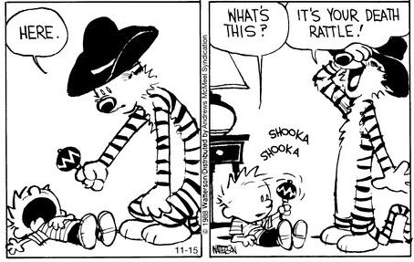

"I'm nothing, and yet I'm all I can think about." --William Hamilton
*Psssst. There’s a virus going around.
Just thought I’d update you in case you weren’t aware.
Perhaps you’ve noticed that The Mind-Tickler and my Facebook entries appear to have taken a slight breather from focusing on the woo, the consciousness, the awareness, the bigger-picture ideas that we generally play with here.
Not because that’s necessary, or because our little focus can change the course of viruses or enlightenment or any other thing.
But more because the intensity of being human has been hopping up and down, waving its arms, screaming and demanding attention.
So I figure maybe we should give it some. I mean, why not?
Sure, all the spiritual gurus talk about putting our attention on things much grander than our selves.
And sure, generally The Mind-Tickler likes to do that as much as the next guy.
Especially since being human, we are told, with all its constant thinking, feeling, and smallness of mind, needs to be transcended and ideally, done away with, in order for us to attain true connection with What Is, with Awareness.
So thought, be gone. Ego? Certainly not. Mind? No way.
But it is kind of weird when we think about it. First because what is so terrible about existing with this humanity? Doesn’t consciousness include that too, along with everything else?
And second, what is it that makes so-called connection with consciousness better, preferable, to the human experience of the individual?
What makes one experience exalted, and one rejected?
Human preference, that’s what.
Preference for peace, light, spaciousness and happy feelings. Rejection of pain, darkness, fear, and aggravation.
Though those are wants, likes, desires.
Which means, even the desire for enlightenment and “connection with consciousness,” is a human thing.
Just more ego, claiming to want to do away with itself.
And we can't help but also notice that, for all the talk of killing the ego and transcending mind, few (if any) seem to be able to actually do it.
I mean, who has no ego, no personality, no human self?
Even the sainted Ramana was still Ramana.
Turns out that no matter how vaporously enlightened and transcendent any of us may become, even if Ramana-level realized, as long as we’re alive, we remain human too.
Now, it is true that it is painful to be an individual. And that being an individual requires the body.
Can’t be a body without being a person. Can’t be a person without a body.
So yes we hurt, and yes we yearn for an enlightenment where hurting will cease to be an issue.
And yes we look earnestly for ways we can have all the cake- have the body, have the life, and just lose only the personhood.
While actually having no interest in truly losing the body, losing the brain, losing functioning and the ability to pay the bills and get the jokes.
So the virus raises fears, and the individual self is loudly front and center these days.
Because this virus has the potential to remove ALL our personhood- the body, the ego, and even the self’s awareness of itself.
And that's a major Do Not Like.
No matter how many satsangs and inquiries and podcasts, the human does not want to die.
In fact, in general we’re obsessed with the self being able to continue on continuing,
FOREVER.
Anything less is “stressful.” Anything less inspires fear.
Now of course we know that the self disappears eventually, and that no matter what we do or realize, each person comes and goes, taking our brief little stories with us as we exit.
Why is why we might want to experience all the drama, all the crazy, all the pathos, while we can.
We might want to relish lockdown, and possible irritation with family, and cuddles and isolation and hunger and overstuffedness. We might want to guffaw at a zillion stupid memes, and cry for our losses, and be productive or lazy or creative or bored.
Because all of that is what makes this whole story so interesting, and is so much a part of why we don’t want it to end.
Ego is the spice, the juice, the fun.
This movie is amazing.
And when/if it starts to feel like too much intensity, sure, we can turn our attention to what can’t die, to what isn’t self, to what is vastly bigger than we are.
Why not do that, too?
Look at us, having it all.
The human still here, even then.
Until it's not.
One way or the other, at some point the self dies, the ego expires, taking the meat suit with it on the way out.
Virus or no virus. Enlightenment or no enlightenment.
And still at all times, we get to have nothing and everything, bigness and smallness, vastness and ego, peace and pain.
Seems kind of amazing
And incredibly generous
to be able to have it,
and be able to be it
all.
Get your every week.
“Realization consists of getting rid of the false idea that one is not realized.” ~Ramana Maharshi
“Death has nothing to do with going away.
The sun sets. The moon sets.
But they are not gone.”
--Rumi
